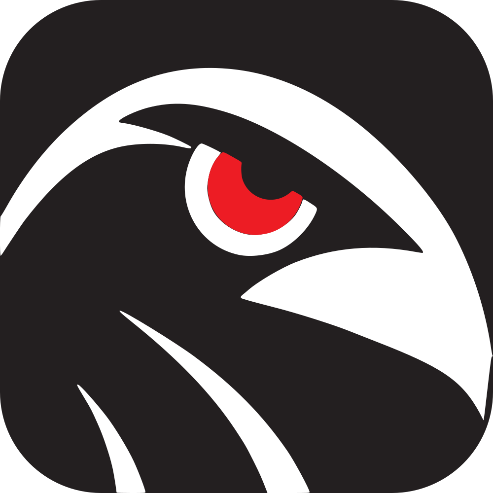

ODINODIN führt zusammen, was im Betrieb heute in Excel-Listen, Ordnern, Mails und Köpfen verteilt ist: Bestand, Finanzierung, Auslieferungen, Teile, Urlaub, Projekte, Wissen. Und es hilft beim Arbeiten: es versteht Sätze, prüft gegen Hausregeln und schreibt zurück in die Listen.
Alle Zahlen, Fahrzeuge, Personen, Banken und Hersteller sind erfunden („Hersteller1“, „Nordbank“ …). Es läuft aber das echte Programm – nicht nur Bilder.
Was du siehst, ist das Grundgerüst. ODIN liest heute noch die bestehenden Listen und Ordner, damit niemand umlernen muss. Schritt für Schritt soll es die Insellösungen ablösen und zur einen Stelle werden, an der der Betrieb läuft.